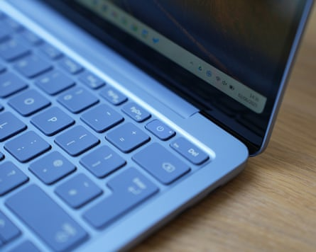
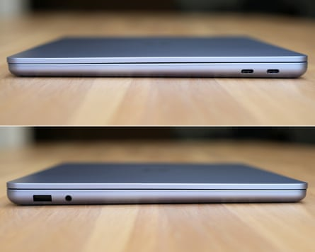
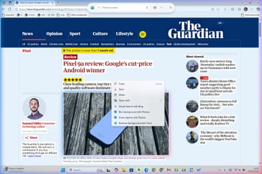
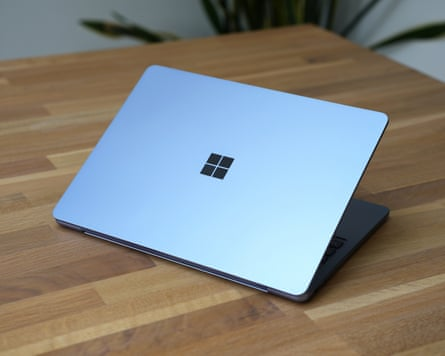
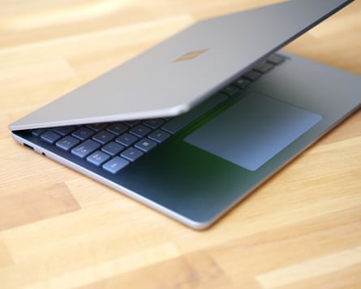

Microsoft’s latest Surface Laptop is smaller and cheaper, managing to condense most of what is great about its larger siblings into a more compact frame without compromising too much on power.
The Surface Laptop 13in joins the current seventh-generation Laptop 13.8in and 15in that were launched in the summer last year. It sits at the bottom of the premium pile in price, costing from £899 (€1,099/$900/A$1,699), but above the Laptop Go 3, which is likely to be phased out.
The new 13in model looks like a cross between the Laptop Go and its bigger siblings. It has a similar but smaller glossy LCD touchscreen, which isn’t quite as bright or crisp and has a slower 60Hz refresh rate, but still looks good for the size. The smooth aluminium deck holds a full-size keyboard that offers a quality typing experience few competitors manage.
The power button doubles as a fingerprint scanner.Photograph: Samuel Gibbs/The Guardian
The generous trackpad is smooth and precise but of the older, hinged variety, instead of the better haptic models fitted to the larger Surface Laptop models and other premium competitors. It still works fine but is harder to click higher up on the pad.
The speakers in the deck are great for the size and the 1080p webcam above the screen is solid, even if it lacks Microsoft’s Windows Hello facial recognition for logging into the machine.
Specifications
- Screen: 13in LCD 1920 x 1280 (178 PPI)
- Processor: Qualcomm Snapdragon X Plus (8 core)
- RAM: 16GB
- Storage: 256 or 512GB
- Operating system: Windows 11 Home
- Camera: 1080P front-facing
- Connectivity: wifi 7, Bluetooth 5.4, USB-A, 2xUSB-C (3.2), headphones
- Dimensions: 285.7 x 214.1 x 15.6mm
- Weight: 1.2kg
Snapdragon X Plus
The laptop takes about two hours to fully charge using a 60W or greater power adaptor (not included), hitting 50% in 36 minutes.Photograph: Samuel Gibbs/The Guardian
The Laptop 13in has Qualcomm’s mid-range Snapdragon X Plus Arm chip with eight cores (versus 10 on the larger models). It won’t win any raw performance awards but it is roughly on a par with its Intel competition and plenty fast enough for a laptop of this size. It stays quiet unless really pushed and feels snappy in operation while managing to be efficient on battery for general use. It lasts a very good 14 hours of work using plenty of browser tabs, multiple chat apps, text editors and note-taking apps. That is almost twice as long as previous Intel-based Surface Laptops and much more on a par with Apple’s class-leading MacBook Air .
Using it for more demanding tasks, such as large photo editing or other creative applications, cuts the battery life roughly in half for a still solid seven hours.
The Surface has two USB-C (3.2) ports and a USB-A port, which is reasonably good for a machine of this size. But it lacks the more modern USB4/Thunderbolt and ditches Microsoft’s proprietary Surface Connect port, relying instead on USB-C for charging, which is no bad thing unless you already own a Surface Dock or similar accessory.
Windows 11 on Arm

Recall allows you to go back in time to see what you were looking at in various apps using a timeline or search.Composite: Samuel Gibbs/The Guardian
The Surface runs Windows 11, which generally works well without any unnecessary trials and bits of software that frequently plague rivals. But Windows on Arm chips, such as the Surface’s Snapdragon models, still has a few compatibility problems not shared by the version running on the standard x86 chips from Intel or AMD.
Apps that aren’t written for Arm systems have to be run through an emulation system, which works in the background but makes them much slower. Lighter-weight x86 apps, such as the note-taker Evernote, work OK but are noticeably slower than on Arm-native rivals.
The majority of popular apps now have Arm versions, which fly along. That includes Google Drive, which until recently was incompatible with Windows on Arm. But there are enough apps with issues, particularly in the creative industries, that you should check for problems before buying. Gaming is also tricky, as most big games including Fortnite are not compatible with Arm chips.
Copilot in the Edge browser allows you to ask questions about the site you’re currently looking at instead of heading to a Google search.Composite: Samuel Gibbs/The Guardian
The laptop is a Copilot+PC and includes Microsoft’s various AI tools. The much-delayed Recall feature records snapshots of what you’re doing on the machine so you can use it like a time machine to see what was on screen at any particular moment. You can search Recall using natural language and interact with the text, images or data it finds, such as opening a site you were browsing a couple of days ago.
It is an opt-in feature, the screenshots are stored locally on your device secured by your fingerprint, and you can block some apps from being captured, such as a password manager, but it could still be a privacy risk too far for some.
The rest of the AI tools are similar to those on previous Surfaces , including a Cocreator system in Paint that can turn crude sketches into art. The most powerful tool is Copilot, which is integrated across multiple Microsoft apps, including Word and other members of the Office suite if you have a subscription. Generally it works as a cross between a search tool and an AI chatbot, and makes short work of turning data into tables, jazzing up your copy or identifying things from images, though you have to use Microsoft’s Edge browser for it to be able to see what you’re looking at on your screen.
Click to Do is a new fast way of interacting with images, objects and text on your screen.Composite: Samuel Gibbs/The Guardian
Microsoft’s new “ Click to Do ” feature allows you to hold the Windows button and click on something on your screen to perform actions with it, such as remove an image’s background with Paint or rewrite the text with AI. It is fairly basic at the moment, with more features to be added later this year, but it works as a much quicker and accessible way of performing AI tasks with things on a PC.
Sustainability
The smooth aluminium lid looks and feels premium, particularly in its violet colour option.Photograph: Samuel Gibbs/The Guardian
The laptop is generally repairable, with a replaceable SSD , spare parts, self-repair and service guides available. The machine contains recycled cobalt and rare earth metals. Microsoft operates trade-in and recycling schemes and publishes out-of-warranty repair costs and product environmental impact reports .
Price
The Microsoft Surface Laptop 13in costs from £899 (€1,099/ $899.99 / A$1,699 ) and ships on 10 June.
For comparison, the Surface Laptop 13.8in costs from £944 , the Surface Pro 12in costs £799 , the Surface Pro 13in costs £1,029 and the 13in MacBook Air M4 costs £999 .
Verdict
The Surface Laptop 13in is a smaller, cut-down version of Microsoft’s excellent Windows 11 laptop.
The general feel of the machine is very similar to its larger siblings thanks to premium materials, a great keyboard and clutter-free Windows 11 experience. The 13in touchscreen is decent, if not quite as good as other models, and the older-technology trackpad still works well. Microsoft’s AI tools are slowly improving, though they are still not a reason to buy a machine.
The lack of USB4/Thunderbolt and face recognition can be overlooked for a cheaper price, as can the lower-power chip. It proved more than fast enough for general productivity, and helps provide long battery life that could see out two full work days between charges. The Arm chip brings with it some potential app compatibility problems that are worth checking out before buying.
Overall, the small Surface Laptop is a lovely machine. But at £900 or equivalent it’s not terribly cheap, with its larger and better sibling often available for similar money, so it’s worth shopping around.
Pros: good keyboard, decent trackpad, good speakers, USB-A and USB-C, decent screen, fingerprint reader, long battery life, solid performance, clutter-free Windows 11 with AI features. Cons: app and game compatibility issues with Arm chip, screen only 60Hz and less crisp than larger siblings, no face recognition, no USB4, no haptic touchpad, a little expensive.
Sleek design and premium materials help elevate the Surface Laptop from the pack.Photograph: Samuel Gibbs/The Guardian